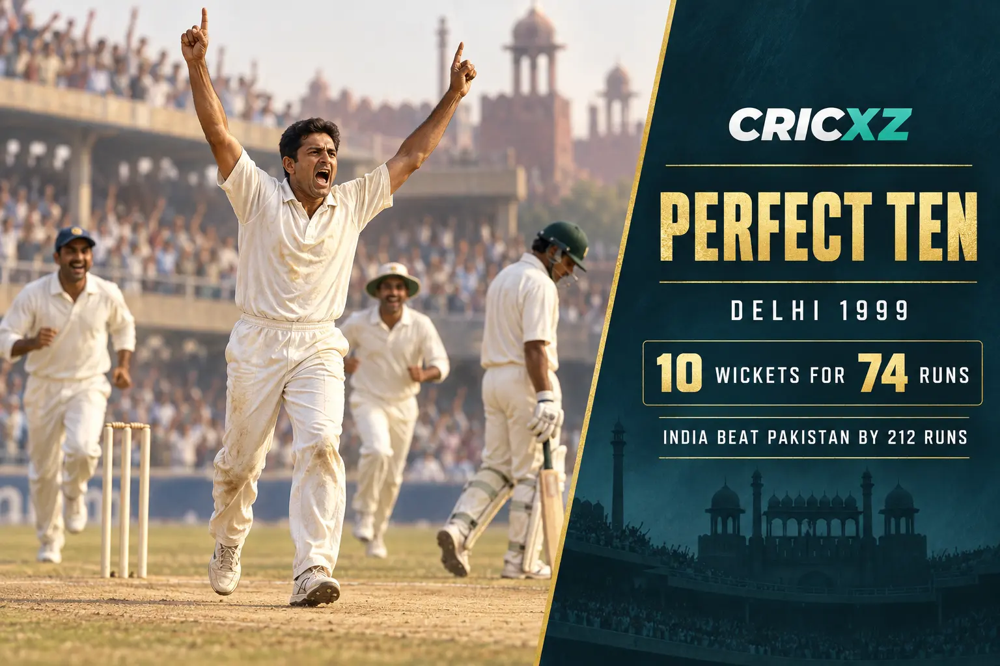

Test Bowling
- Matches
- 132
- Innings
- 236
- Wickets
- 619
- Best innings
- 10/74
- Best match
- 14/149
- Bowling average
- 29.65
- Economy rate
- 2.69
- Five-wicket hauls
- 35
- Ten-wicket matches
- 8

Anil Kumble took 956 international wickets across an 18-year career. His accuracy, bounce and relentless competitiveness made him India's leading wicket-taker in both Tests and ODIs.
Career statistics are final.
Kumble retired from international cricket in November 2008. The figures above were checked against ICC and established statistical records.
Kumble played 403 international matches and claimed 619 Test wickets plus 337 ODI wickets. He relied on pace, accuracy and steep bounce as much as conventional turn, building pressure through long and demanding spells.

On 7 February 1999, Kumble took all ten Pakistan wickets in the second innings at Delhi. His 10/74 made him only the second bowler after Jim Laker to claim every wicket in a Test innings, and India won the match by 212 runs.
Kumble's persistence also produced an unbeaten 110 against England at The Oval in 2007, his only international century. Later that year he became India's Test captain and led the side during a demanding period that included a memorable victory in Perth in January 2008.
9 August 1990 – 2 November 2008
Debuted against England at Manchester and made his final appearance against Australia in Delhi.
25 April 1990 – 19 March 2007
Debuted against Sri Lanka at Sharjah and played his final ODI against Bermuda in the 2007 World Cup.
2007–2008
Led India in Test cricket late in his career and was respected for calm, dignified leadership.
Finished with 619 Test wickets and 337 ODI wickets.
Took all ten wickets in Pakistan's second innings at Delhi in 1999.
Produced 35 five-wicket innings and eight ten-wicket match hauls.
Recorded career-best ODI figures against West Indies in the 1993 Hero Cup final.
Scored his maiden Test hundred against England at The Oval in 2007.
Bowled with a fractured jaw and dismissed Brian Lara in a memorable display of determination.
Received India's national sporting honour for excellence in cricket.
Was selected among Wisden's five cricketers of the year.
Received India's fourth-highest civilian award.
Was inducted in recognition of his outstanding international career.
Later served as head coach of the India men's national team.
Read Rahul Dravid's career records, explore Kapil Dev's all-round statistics, or browse all CricXZ player profiles.